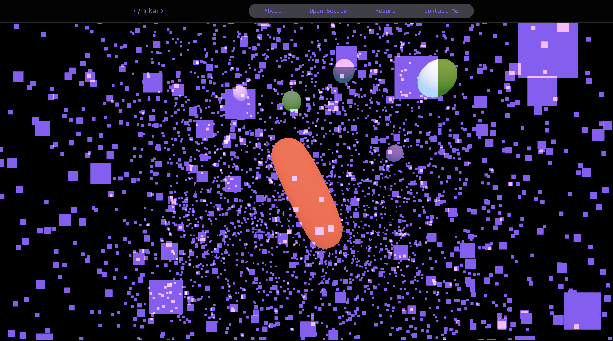
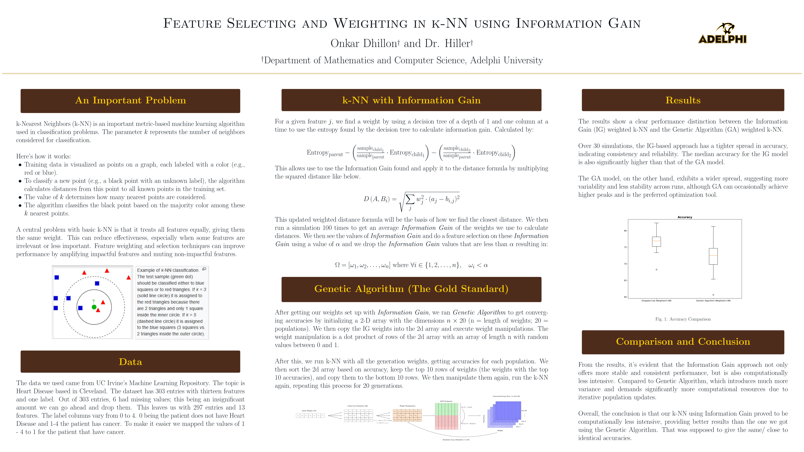

Building My First Website
I started off by building my first website from scratch, experimenting with plain HTML, CSS, and JavaScript. It was a big milestone in learning web development and taught me the importance of structured, maintainable code.
After getting comfortable with the basics, I wanted to streamline my workflow and build more dynamic projects. That’s when I switched to Next.js for its server-side rendering and routing features, and Tailwind CSS for faster, utility-first styling. The combination allowed me to build cleaner, more scalable websites without spending hours rewriting boilerplate code.
This transition completely changed the way I approach projects—now I focus more on design and functionality instead of wrestling with repetitive setup.

ML Research
For my research, I explored visualizing concepts like Information Gain, decision trees, and k-NN using LaTeX and TikZ. This gave me a deeper appreciation for how diagrams can simplify complex algorithms and make abstract math feel more intuitive.
One of the key directions I pursued was using Information Gain from decision trees not just for visualization, but as a way to improve k-NN. By ranking features based on their Information Gain, I applied weighting and selective filtering to emphasize the attributes that contributed the most to classification accuracy. This effectively reduced noise and guided k-NN to focus on the most informative parts of the dataset.
Through experiments, I was able to show that this hybrid approach outperformed a baseline k-NN as well as feature selection techniques based on Genetic Algorithms (GA). While GA searches stochastically for optimal subsets, my Information Gain–driven method provided a more deterministic and interpretable way of enhancing k-NN. The result was a consistent boost in accuracy along with greater transparency in how features were prioritized.
This project taught me that combining the strengths of different algorithms — in this case, the interpretability of decision trees with the flexibility of k-NN — can lead to better performance than using each in isolation. It also highlighted the importance of feature selection as a critical step in machine learning pipelines.